AdaBoost
Overview
Boosting is an ensemble method. It combines many weak models into one strong one. A weak model is one that's only a little better than guessing. The key word is sequence. Boosting builds its models one after another, and each new model focuses on the examples the earlier ones got wrong. AdaBoost (Adaptive Boosting), introduced by Freund and Schapire in 1997, was the first practical boosting algorithm.
Boosting vs. bagging
Bagging (bootstrap aggregating, the idea behind random forests) also combines many trees, but it builds them independently and in parallel. Each tree gets its own random resample of the rows, grows deep, and then every tree gets an equal vote. The trees never learn from each other, and averaging them mainly reduces variance, the jumpiness of a single deep tree. Boosting is the opposite. Its trees are shallow, built one after another, and each one is trained on a reweighted version of the data that puts the earlier mistakes front and center. The final vote is weighted, so better trees count for more. That mainly reduces bias, meaning it turns a model that's too simple into one that can capture more.
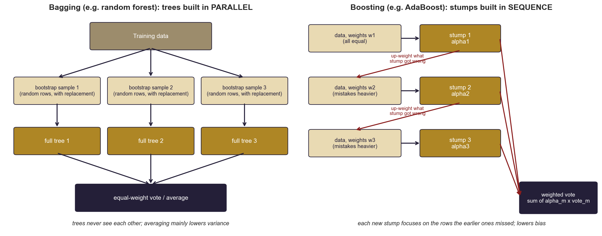
Decision stumps
AdaBoost's usual weak learner is a decision stump, which is a decision tree with just one split. It asks a single question, like "Is runtime 118.5 minutes or less?", and predicts one class for "yes" and another for "no". On its own a stump is a poor model (one stump gets 42.9% on my data, against a 35.2% baseline). But it's fast, hard to overfit, and just better than chance, and that's all boosting needs.
How AdaBoost works, round by round
- Start with equal weights. Each of the N training rows gets weight wi = 1/N.
- Fit a stump on the weighted data. The stump picks the split that does best on the weighted rows, so heavy rows matter more.
- Measure its weighted error. err = the total weight of the rows it got wrong.
- Give the stump a say, alpha. For two classes, α = ½ ln((1 − err) / err). With K classes, scikit-learn uses the SAMME version, α = ln((1 − err) / err) + ln(K − 1), multiplied by the learning rate. A stump with low error gets a big alpha. A stump that does no better than random guessing (err = 0.5 for two classes, 2/3 for three) gets alpha = 0, so it has no say.
- Reweight the rows. Every row the stump got wrong has its weight multiplied by eα. Then all the weights are rescaled to add up to 1, so the rows it got right lose weight. The next stump is pulled toward the hard cases.
- Repeat for M rounds (
n_estimators). - Final weighted vote. To classify a new movie, each stump votes for a class, and its vote counts αm. The class with the most total alpha wins. For two classes, that's just the sign of Σ αm hm(x).
The learning rate shrinks every alpha. That slows the learning down, so more rounds are needed, but it often generalizes better. Learning rate and number of rounds trade off against each other, which is why I tune them together below.
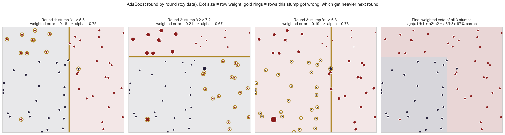
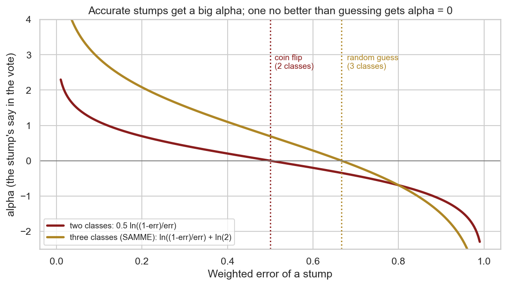
Data Prep
AdaBoost is supervised, so it needs labeled data. I kept the same task as the Naive Bayes and
Decision Trees tabs so the results can be compared. The label is
reception_class: Low (rating 6.5 or below),
Medium (above 6.5 up to 7.2) or High (above 7.2), predicted
only from things known before release.
Getting everything into numbers. scikit-learn's
AdaBoostClassifier only accepts numeric input. Six columns are already numeric:
budget in $M, runtime, release year, release month, number of genres and number of spoken
languages. Stumps split on thresholds, so these need no scaling. The 18 genres are already
one 0/1 column each. That leaves three categorical text columns, which I
turned into numbers with one-hot encoding:
original_language: "en", "ja", "fr", "ko" and so onprimary_country: "US", "GB", "FR", "CA" and so onrelease_season: winter, spring, summer or fall, built from the release month
One-hot encoding replaces a column with k possible values by k 0/1
columns. Exactly one of them is 1 for each movie. For example, a US production becomes
primary_country_US = 1 with every other country column 0. You can't just number
the categories (US = 1, GB = 2, FR = 3, …), because a stump would then treat "France is
greater than Britain" as meaningful and split on it. I used scikit-learn's
OneHotEncoder and fit it on the training rows only. Any value
that appears in fewer than 20 training movies is pooled into an _other column, so
there aren't dozens of nearly empty columns. That leaves English vs. other for language
(English is 1,299 of the 1,371 training movies), nine country columns (US, GB, FR, CA, DE,
CN, JP, AU and other), and the four seasons. That's 15 one-hot columns,
for 39 features in total.
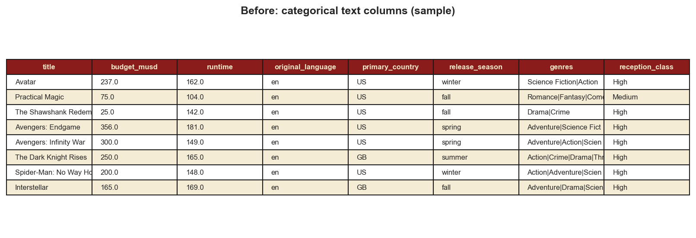
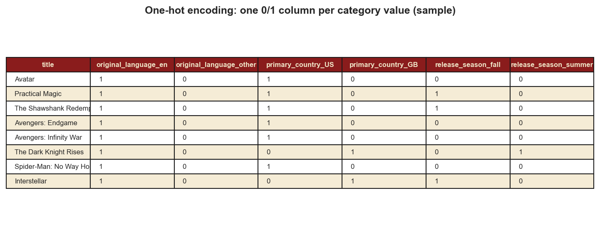
primary_country_GB = 1.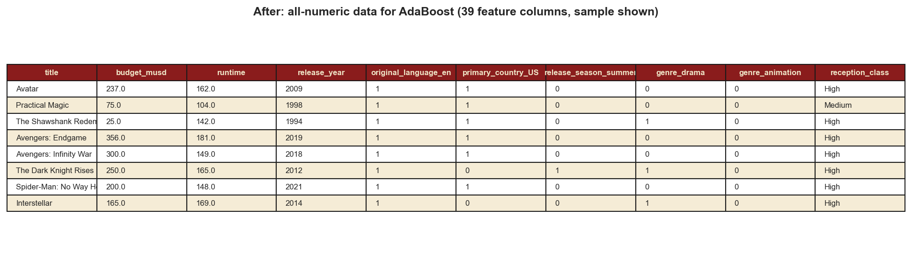
Training set and testing set
I used the same stratified 75/25 split as every other supervised tab: 1,371 training movies and 457 testing movies, with the same movie ids. All tuning happens inside the training set using 5-fold cross-validation, so the testing set is used only once, for the final score.
The sets must be disjoint. That matters even more for boosting than for a single tree. AdaBoost keeps adding stumps aimed at whichever training rows it still gets wrong, so with enough rounds it will chase down individual hard training movies. A score on movies it trained on would show that memorization, not real skill. Only movies it never saw, in training or in tuning, can tell you how it will do on the next release. The code checks that the train and test ids don't overlap.
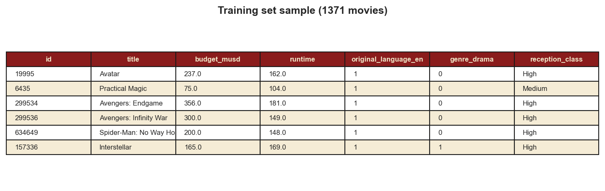
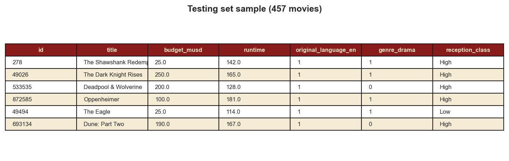
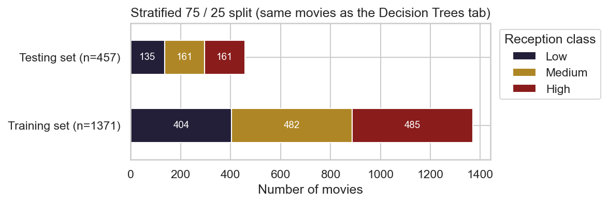
Code
Everything is in Python, using scikit-learn's AdaBoostClassifier,
DecisionTreeClassifier (as the stump), OneHotEncoder and
StratifiedKFold, along with pandas and matplotlib.
# one-hot encode the categorical columns (fit on training rows only)
enc = OneHotEncoder(min_frequency=20, handle_unknown="infrequent_if_exist", sparse_output=False)
enc.fit(raw.loc[train, ["original_language", "primary_country", "release_season"]])
# tune: 5-fold CV inside the training set; staged_score gives accuracy after every round
for lr in [0.05, 0.1, 0.25, 0.5, 1.0]:
m = AdaBoostClassifier(estimator=DecisionTreeClassifier(max_depth=1),
n_estimators=500, learning_rate=lr)
m.fit(X_fold_train, y_fold_train)
curve = list(m.staged_score(X_fold_val, y_fold_val))
# final model, refit on all training movies, scored once on the testing set
ada = AdaBoostClassifier(estimator=DecisionTreeClassifier(max_depth=1),
n_estimators=426, learning_rate=1.0, random_state=42)
ada.fit(X_train, y_train)
print(accuracy_score(y_test, ada.predict(X_test)))
print(ada.estimator_weights_[:12]) # the alphasResults
Tuning the number of rounds and the learning rate
I tried five learning rates (0.05, 0.1, 0.25, 0.5, 1.0) and every number of rounds from 1 to
500, using 5-fold cross-validation on the 1,371 training movies. staged_score
gives the validation accuracy after each added stump, so one fit per fold covers the whole
curve.
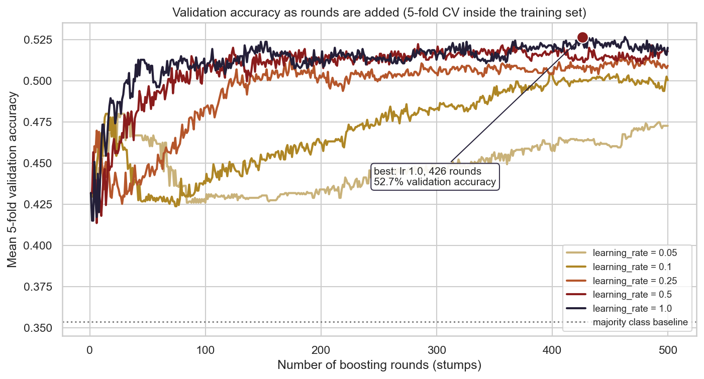
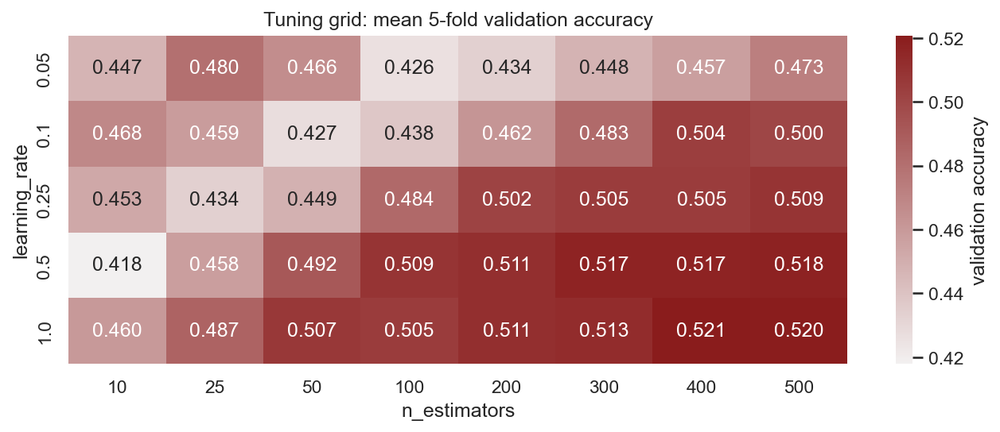
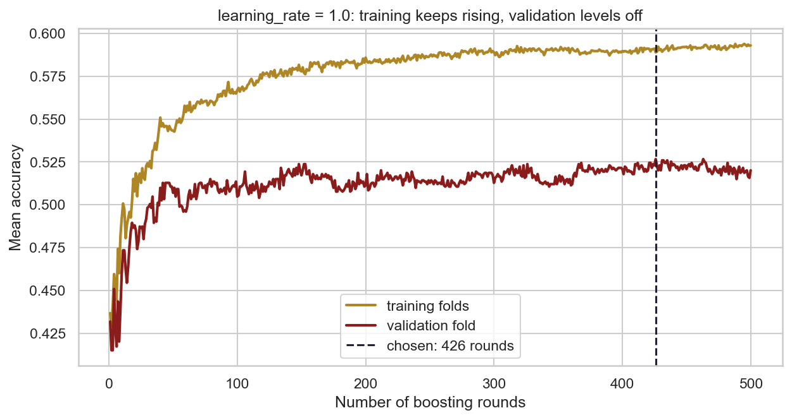
The validation curve is nearly flat from about 100 to 500 rounds at learning rate 1.0. That's why the default model (50 rounds, learning rate 1.0) and the tuned one (426 rounds) happen to land on the same test accuracy. Tuning confirmed that a high learning rate is the right choice for this data, and that past roughly 100 rounds the exact number barely matters.
The tuned model on the testing set
Refit on all 1,371 training movies with 426 stumps and learning rate 1.0, AdaBoost gets 54.9% accuracy on the 457 testing movies (training: 60.1%). The baseline of always guessing the largest class gets 35.2%.
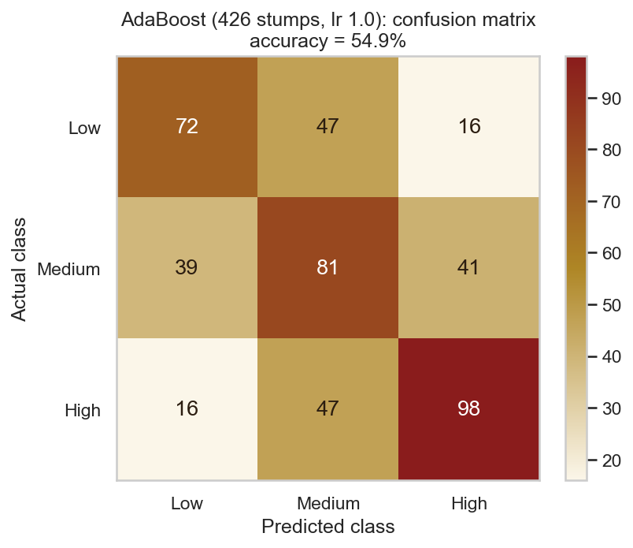
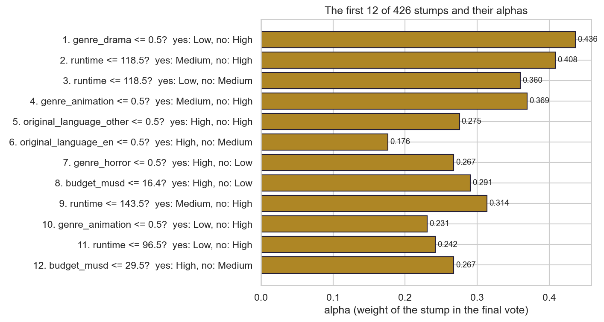
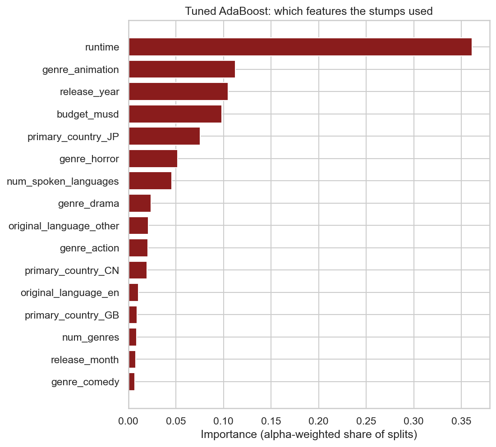
The first few stumps get the biggest alphas (0.18 to 0.44). After that they shrink fast. The median over all 426 stumps is only 0.03, and the smallest is 0.005. That's because, with three classes, random guessing gets 2/3 of the (weighted) rows wrong, and once the easy patterns are used up, each new stump is only a little better than that. That's what "weak learner" means. No single stump is much good, but 426 of them voting together beat a carefully grown tree.
AdaBoost vs. the decision tree from Part 3
| Model (same 457 test movies) | Accuracy | Recall: Low | Recall: Medium | Recall: High |
|---|---|---|---|---|
| Baseline (always the largest class) | 35.2% | |||
| One stump on its own | 42.9% | |||
| Decision Tree 2 (entropy, depth 4), best tree from Part 3 | 50.1% | 60.7% | 19.3% | 72.0% |
| AdaBoost (426 stumps, learning rate 1.0) | 54.9% | 53.3% | 50.3% | 60.9% |
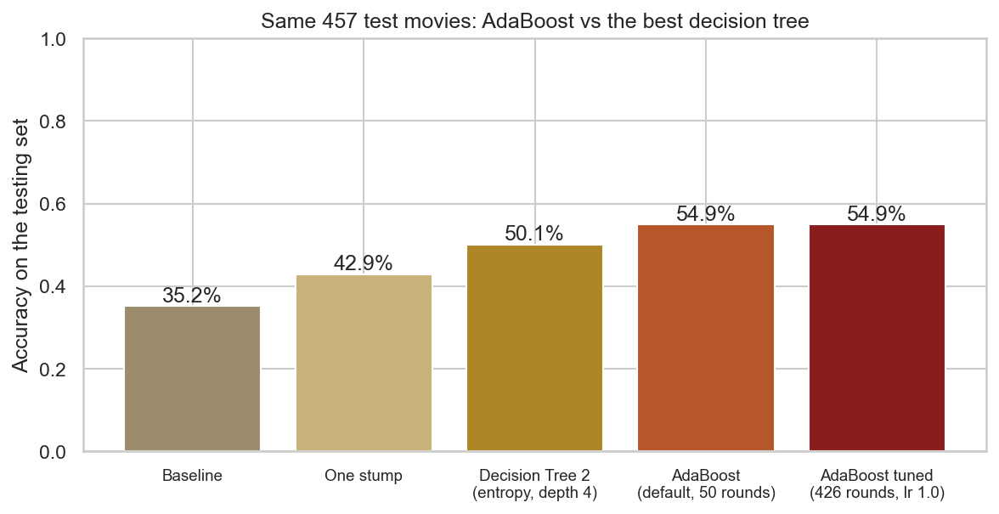
AdaBoost did best, by 4.8 percentage points (54.9% vs. 50.1%). That's 22 more of the 457 testing movies classified correctly, and a 10% relative improvement over the tree. The more interesting difference is where it wins. Decision Tree 2 got its score by leaning hard on High and nearly giving up on Medium (19% recall). AdaBoost is far more balanced. It finds half of the Medium movies (50%), and it gives up some High recall to do that. Boosting kept reweighting the hard-to-classify middle films until stumps were built specifically to catch them, which a single greedy tree never does.
For context, Multinomial Naive Bayes (57.8%) is still the best three-class model on the same split. So boosting closed most of the gap between trees and Naive Bayes, but didn't overtake it.
Conclusions
- Many small questions beat one big tree. No single pre-release fact decides how audiences will rate a film. Even the best stump only gets 43%. Adding up hundreds of small, weighted hints (a bit of runtime, a bit of genre, a bit of budget, a bit of country) predicts Low, Medium or High correctly 55% of the time. That's up from 50% for the best single tree and 35% for guessing.
- Runtime is the strongest single signal. Across all 426 stumps, runtime carries over a third of the total importance. Longer films lean High and short films lean Low. That agrees with the decision trees and the logistic regression.
- The "pretty good" movies can be found. The Medium class was the weak spot of every earlier model. AdaBoost finds 50% of Medium films, against 19% for the best tree, because boosting keeps refocusing on exactly the borderline movies earlier stumps got wrong. For a studio, that means the model can say more than "hit or miss". It can also flag the films likely to land in the middle.
- The ceiling is the data, not the model. Tuning moved validation accuracy only from about 51% to 53%, and the default and tuned models scored the same on test. Every model on the site now lands between 50% and 58% on the three-class task. To do much better I'd need information these pre-release features don't have, like cast, director track record or early reviews.